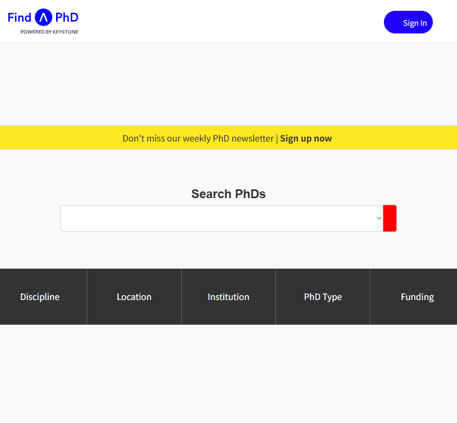
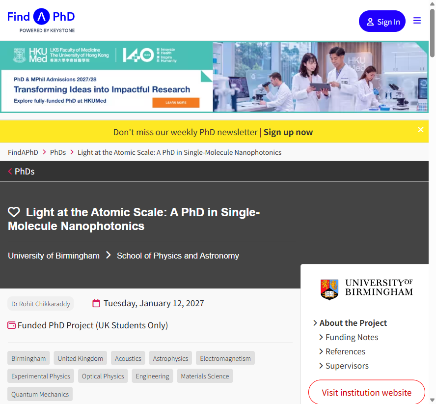

使用浏览器自动化从 findaphd.com 爬取 PhD 招聘信息的完整步骤
本指南演示如何通过浏览器自动化工具访问 findaphd.com（全球最大的 PhD 机会数据库），并从单个 PhD 项目详情页中提取结构化的招聘数据（标题、大学、导师、截止日期、资助类型、地点、学科、项目描述等）。
| 工具 | 说明 |
|---|---|
| ego-browser | Trae 内置的 Chromium 浏览器自动化工具，基于 ego-lite |
| Trae AI | 驱动浏览器操作的 AI Agent |
| PowerShell | Windows 下运行命令的终端 |
加载 ego-browser 技能后，先运行一次获取使用指南：
ego-browser skill将以下脚本保存为 round-01.mjs：
const task = await taskSpace("findaphd-scrape");
console.log({ taskSpaceId: task.spaceId });
const page = task.page("p1");
await page.goto("https://www.findaphd.com/");
await page.waitForLoadState();
console.log(await page.snapshot({ scope: "full_page" }));在 PowerShell 中运行：
ego-browser nodejs -e "await import('file:///C:/path/to/round-01.mjs')".mjs 文件后用 import() 加载。含中文的脚本也必须放在文件内。
从首页快照中可以看到「Latest PhDs」区域列出了最新的 PhD 项目链接，格式为：
/phds/project/<项目slug>/?p<项目ID>首页可能有推广弹窗，需先关闭：
await page.evaluate(() => {
document.querySelectorAll('[class*="close"], [role="dialog"] button').forEach(b => b.click());
});
await page.waitForTimeout(1000);
直接导航到具体项目 URL（从首页或搜索引擎获取）：
await page.goto("https://www.findaphd.com/phds/project/light-at-the-atomic-scale-a-phd-in-single-molecule-nanophotonics/?p201508");
await page.waitForLoadState();
通过 page.evaluate() 在浏览器内执行 DOM 查询，提取各字段：
const data = await page.evaluate(() => {
const title = document.querySelector('h1.phd-header__phd-title')
?.textContent.replace(/\s+/g,' ').trim();
const university = document.querySelector('a.phd-header__institution')?.textContent.trim();
const school = document.querySelector('a.phd-header__department')?.textContent.trim();
const keyInfo = [...document.querySelectorAll('.key-info__content')]
.map(el => el.textContent.replace(/\s+/g,' ').trim());
const supervisor = keyInfo.find(t => /^(Dr|Prof)\.?\s/.test(t));
const deadline = keyInfo.find(t => /(Monday|Tuesday|...),/.test(t));
const funding = keyInfo.find(t => /funded|studentship/i.test(t));
const badges = [...document.querySelectorAll('a.phd-data')].map(a => a.textContent.trim());
const city = badges.find(t => t !== 'United Kingdom' && !t.includes(' '));
const country = badges.find(t => t === 'United Kingdom');
const subjects = badges.filter(t => t !== city && t !== country);
return { title, university, school, supervisor, deadline, funding,
location: `${city}, ${country}`, subjects, url: location.href };
});const fs = await import("node:fs/promises");
await fs.writeFile("C:/path/to/sample-phd.json", JSON.stringify(data, null, 2), "utf-8");
await task.finish({ keep: [] }); // 关闭任务空间项目详情页各字段对应的 CSS 选择器：
| 字段 | CSS 选择器 |
|---|---|
| 标题 | h1.phd-header__phd-title |
| 大学 | a.phd-header__institution |
| 学院 | a.phd-header__department |
| 导师 / 截止日期 / 资助 | .key-info__content（按文本模式匹配） |
| 城市 / 国家 / 学科 | a.phd-data（徽章链接） |
以下是从一个真实 PhD 项目页提取的完整数据：
完整 JSON 数据见 assets/data/sample-phd.json。
/phds/latest/）会触发 "Just a moment..." 且无法自动通过。https://www.findaphd.com/，等待标题正常后再跳转目标页。首页挑战会自动通过。
nextElementSibling 时可能抓到 <script> 标签。SCRIPT 标签，或只收集段落文本长度 > 50 的元素。
.mjs 文件，不能用 -e 内联传参，否则中文会乱码。
已实现 多空间并行爬取，可批量获取 PhD 数据并自动转换为 PhDRadar 格式。
/phds/latest/ 获取所有项目链接# 方式1：启动脚本
.\run-scraper.ps1
# 方式2：直接运行
ego-browser nodejs -e "await import('file:///C:/path/to/scraper.mjs')"| findaphd 字段 | PhDRadar 字段 | 转换方式 |
|---|---|---|
| — | level | 固定 phd |
| fundingType | eligibility | UK only / International / check |
| title | title | 原文 |
| university | institution | 原文 |
| city, country | city, country | 原文 |
| deadline | deadline | 转 YYYY-MM-DD |
| subjects | flags | 用 ; 连接 |
使用 Windows 任务计划程序实现每天自动运行：
powershell.exe-ExecutionPolicy Bypass -File "C:\path\to\run-scraper.ps1"data/ 目录